Фундамент
Учимся связывать изученные CSS-свойства и HTML-теги
Текст
Списки
Таблицы
Эффективное использование границ может помочь сделать таблицу более наглядной. Границы вокруг таблицы или отдельных ячеек могут оказать большое влияние, когда пользователь пытается интерпретировать данные и быстро сканировать информацию.
При стилизации границ через CSS есть два свойства, которые могут быстро пригодиться: border-collapse и border-spacing.
- Границы в таблице - Свойство border-collapse
- Границы в таблице - Свойство border-spacing
- Добавление границ к строкам
- Чередование в таблице
- Выравнивание текста
- Полностью стилизованная таблица
Буквица
Буквица является художественным приемом оформления текста и представляет собой увеличенную первую букву, базовая линия которой ниже на одну или несколько строк базовой линии основного текста. Заметьте, что это не просто увеличенный символ, буквица не выступает над блоком текста, а является его частью.
Чтобы выделить первую букву воспользуемся псевдоэлементом ::first-letter - он устанавливает стиль первого символа текста. Для этого добавим его к селектору p, как это показано в примере
Для начала увеличиваем размер буквицы через свойство font-size и устанавливаем желаемые поля вокруг буквы.
Чтобы происходило обтекание используем свойство float со значением left. Тогда первые буквы будут выравниваться по левому краю, а остальной текст обтекать их справа и снизу.
Свойство float может затронуть и нижние абзацы текста и получится некрасиво. Поэтому для каждого абзаца отменяем его действие через clear.
Положение буквы по вертикали относительно остального текста можно регулировать с помощью line-height. Экспериментируйте со значениями и получите разные варианты буквиц.
Создание буквицы
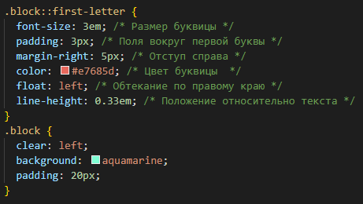 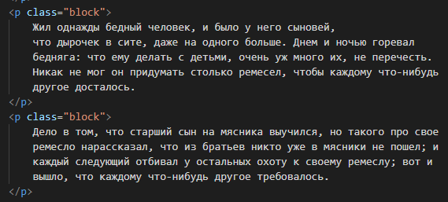
Жил однажды бедный человек, и было у него сыновей, что дырочек в сите, даже на одного больше. Днем и ночью горевал бедняга: что ему делать с детьми, очень уж много их, не перечесть. Никак не мог он придумать столько ремесел, чтобы каждому что-нибудь другое досталось.
Дело в том, что старший сын на мясника выучился, но такого про свое ремесло нарассказал, что из братьев никто уже в мясники не пошел; и каждый следующий отбивал у остальных охоту к своему ремеслу; вот и вышло, что каждому что-нибудь другое требовалось.
Если убрать свойство float и margin-right в примере, то мы получим выступающий инициал — так называется увеличенная первая буква предложения, базовая линия которой совпадает с базовой линией основного текста. В отличие от буквицы выступающий инициал располагается на одной линии с текстом.
Выступающий инициал
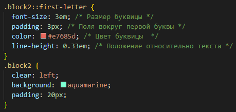 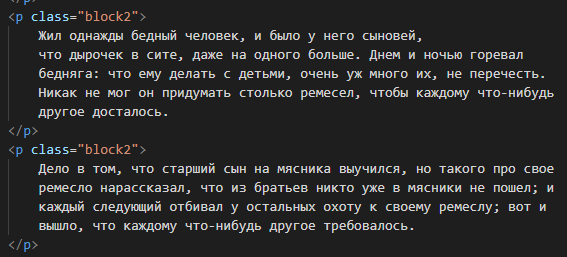
Жил однажды бедный человек, и было у него сыновей, что дырочек в сите, даже на одного больше. Днем и ночью горевал бедняга: что ему делать с детьми, очень уж много их, не перечесть. Никак не мог он придумать столько ремесел, чтобы каждому что-нибудь другое досталось.
Дело в том, что старший сын на мясника выучился, но такого про свое ремесло нарассказал, что из братьев никто уже в мясники не пошел; и каждый следующий отбивал у остальных охоту к своему ремеслу; вот и вышло, что каждому что-нибудь другое требовалось.
Стилизация пунктов списка
Маркированные и нумерованные списки используют маркеры пунктов списка по умолчанию. Для маркированных списков это, как правило, однотонные точки, в то время как для нумерованных списков, как правило, применяются числа.
С помощью CSS стиль и положение этих маркеров можно настраивать.
list-style-image
Устанавливает адрес изображения, которое служит в качестве маркера списка.
Это свойство наследуется, поэтому для отдельных элементов списка для восстановления маркера используется значение none.
Значение по умолчанию : none
Применяется К элементам <dd>, <dt>, <li>, <ol> и <ul>, а также ко всем элементам, у которых указано display: list-item
Синтаксис
list-style-image: none | url(<адрес>)
Значения
-
none
Отменяет изображение в качестве маркера для родительского элемента. -
url
Относительный или абсолютный путь к графическому файлу. Значение можно указывать в одинарных, двойных кавычках или без них.
Пример
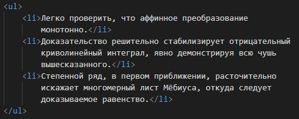 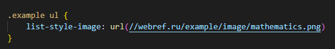
- Легко проверить, что аффинное преобразование монотонно.
- Доказательство решительно стабилизирует отрицательный криволинейный интеграл, явно демонстрируя всю чушь вышесказанного.
- Степенной ряд, в первом приближении, расточительно искажает многомерный лист Мёбиуса, откуда следует доказываемое равенство.
list-style-type
Изменяет вид маркера для каждого элемента списка.
Это свойство используется только в случае, когда значение list-style-image установлено как none.
Доступные значения находятся в диапазоне от квадратиков и десятичных чисел до армянской нумерации и стиль в CSS может быть добавлен к элементам <ul>, <ol> или <li>.
Маркеры различаются для маркированного списка (элемент <ul>) и нумерованного (элемент <ol>).
Значение по умолчанию: disc (для <ul>); decimal (для <ol>)
Синтаксис
list-style-type: circle | disc | square | armenian | decimal | decimal-leading-zero | georgian | lower-alpha | lower-greek | lower-latin | lower-roman | upper-alpha | upper-latin | upper-roman | none
Значения
Значения зависят от того, к какому типу списка они применяются: маркированному или нумерованному.
Маркированный список
| circle | Маркер в виде кружка. |
| disc | Маркер в виде точки. |
| square | Маркер в виде квадрата. |
Нумерованный список
| decimal | Арабские числа (1, 2, 3, 4,...). |
| decimal-leading-zero | Арабские числа с нулем впереди для цифр меньше десяти (01, 02, 03,...). |
| lower-alpha | lower-latin | Строчные латинские буквы (a, b, c, d,...). |
| lower-greek | Строчные греческие буквы (α, β, γ, δ,...). |
| upper-alpha | upper-latin | Заглавные латинские буквы (A, B, C, D,...). |
| upper-roman | Заглавные римские числа (I, II, III, IV, V,...). |
| lower-roman | Строчные римские числа (i, ii, iii, iv, v,...). |
| armenian | Традиционная армянская нумерация. |
| georgian | Традиционная грузинская нумерация. |
| none | Отменяет маркеры для списка. |
Использование изображения в качестве маркера списка
Может наступить время, когда значений по умолчанию для свойства list-style-type не хватит и мы пожелаем задать свой собственный маркер списка. Кроме, рассмотренного ранее свойства list-style-image, чаще всего это делается путём размещения фонового изображения для каждого элемента <li>.
Процесс включает в себя удаление любого значения свойства list-style-type по умолчанию и добавление фонового изображения и полей для элемента <li>. Таким образом:
- Значение none свойства list-style-type удалит существующие маркеры списка.
- Свойство background задаст фоновое изображение вместе с его положением и повтором, если необходимо.
- Свойство padding обеспечит пространство слева от текста для фоновой картинки.
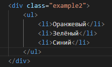 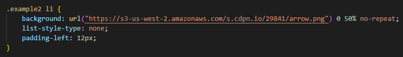
- Оранжевый
- Зелёный
- Синий
list-style-position
Определяет, как будет размещаться маркер относительно текста
— маркер обтекается текстом (рис. 1) или вынесен за границу элемента списка (рис. 2).
Значение по умолчанию: outside
Применяется: К элементам <dd>, <dt>, <li>, <ol> и <ul>, а также ко всем элементам, у которых указано display: list-item
Синтаксис
list-style-position: inside | outside
Значения
| inside | Маркер является частью текстового блока и отображается в элементе списка. (маркер обтекается текстом рис.1) |
| outside | Текст выравнивается по левому краю, а маркеры размещаются за пределами текстового блока. (маркер вынесен за границу элемента списка рис.2) |
Значение outside размещает маркер списка слева от элемента <li> и не позволяют любому содержимому обтекать ниже этот маркер.
- Капкейки — один из лучших существующих десертов, особенно с кремом из сливочного сыра сверху.
- Обсыпка — одна из наиболее популярных штук для капкеек, украшает их и добавляет немного сахара.
Значение inside (которое редко используется и можно увидеть) размещает маркер списка в первой строке элемента <li> и позволяет содержимому обтекать маркер при необходимости.
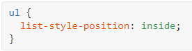
- Капкейки — один из лучших существующих десертов, особенно с кремом из сливочного сыра сверху.
- Обсыпка — одна из наиболее популярных штук для капкеек, украшает их и добавляет немного сахара.
list-style
Универсальное свойство
Позволяет одновременно задать стиль маркера, его положение, а также изображение, которое будет использоваться в качестве маркера списка.
Значение по умолчанию: Нет.
Применяется: К элементам <dd>, <dt>, <li>, <ol> и <ul>, а также ко всем элементам, у которых указано display: list-item
Синтаксис
list-style: list-style-type || list-style-position || list-style-image
Значения
Любые комбинации трёх значений определяющих стиль маркеров. Они разделяются между собой пробелом.
Комбинации значений должны следовать в указанном порядке: вначале идёт тип маркера, затем положение и картинка.
Ни одно значение не является обязательным, поэтому неиспользуемые можно опустить.
Горизонтальное отображение списка
Иногда мы хотим отобразить списки горизонтально, а не вертикально. Возможно, мы желаем разделить список на несколько колонок, чтобы построить список навигации или разместить несколько пунктов списка в один ряд. В зависимости от содержания и желаемого внешнего вида есть несколько способов для отображения списков в виде одной строки, например, путём принятия значения свойства display для элементов <li> как inline или inline-block или через свойство float.
Отображение списка
Самый быстрый способ отобразить список на одной строке — это задать элементам <li> свойство display со значением inline или inline-block. Это поставит все элементы <li> в одну строку с одинаковым промежутком между каждым пунктом списка.
Намного чаще мы будем использовать значение inline-block вместо значения inline. Значение inline-block позволяет легко добавлять вертикальные отступы и другое пространство к элементам <li>, в то время как значение inline нет.
При изменении значения свойства display на inline или inline-block, маркер списка, будь то точка, число или другое, удаляется.
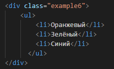 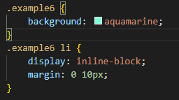
- Оранжевый
- Зелёный
- Синий
Списки с float
Изменение значение свойства display на inline или inline-block быстро, однако это удаляет маркеры списка.
Если они необходимы, то добавление float к каждому элементу <li> является лучшим вариантом, чем изменение свойства display.
Установка для всех элементов <li> свойства float как left выровняет горизонтально все элементы <li> непосредственно рядом друг с другом без каких-либо промежутков между ними. Когда мы используем float для <li>, маркер списка отображается по умолчанию и будет располагаться поверх элемента <li> рядом с ним.
Чтобы предотвратить отображение маркера списка поверх других элементов <li>, должны быть добавлены горизонтальный margin или padding.
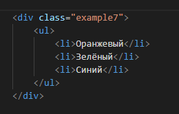 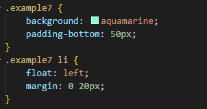
- Оранжевый
- Зелёный
- Синий
Как и с любыми обтекаемыми элементами это нарушает поток страницы. Мы не должны забывать очищать float и возвращать страницу в обычный поток — наиболее распространённым методом через clearfix.
Пример навигационного списка
Границы в таблице - Свойство border-collapse
Таблицы состоят из родительского элемента <table>, а также вложенных элементов <th> или <td>. Когда мы устанавливаем границы к этим элементам, то границы вокруг одного элемента начинают соединяться с границами другого элемента.
Например, если положить двухпиксельную границу вокруг всей таблицы, а затем дополнительно двухпиксельную границу вокруг каждой ячейки таблицы, то получится четырёхпиксельная граница вокруг каждой ячейки в таблице.
Свойство border-collapse определяет модель границы в таблице.
border-collapse
Устанавливает, как отображать границы вокруг ячеек таблицы.
Это свойство играет роль, когда для ячеек установлена рамка, тогда в месте стыка ячеек получится линия двойной толщины (рис. 1а). Значение collapse заставляет браузер анализировать подобные места в таблице и убирать в ней двойные линии (рис. 1б).
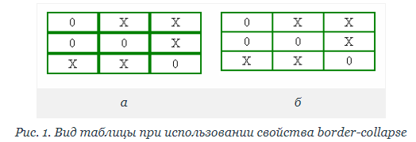
При этом между ячейками остаётся только одна граница, одновременно принадлежащая обеим ячейкам. То же правило соблюдается и для внешних границ, когда вокруг самой таблицы добавляется рамка.
Значение по умолчанию: separate
Применяется: К элементу <table> или к элементам, у которых значение display установлено как table или inline-table
Синтаксис
border-collapse: collapse | separate
Значения
| collapse | Линия между ячейками отображается только одна. |
| separate | Вокруг каждой ячейки отображается своя собственная рамка, в местах соприкосновения ячеек показываются сразу две линии. |
Пример
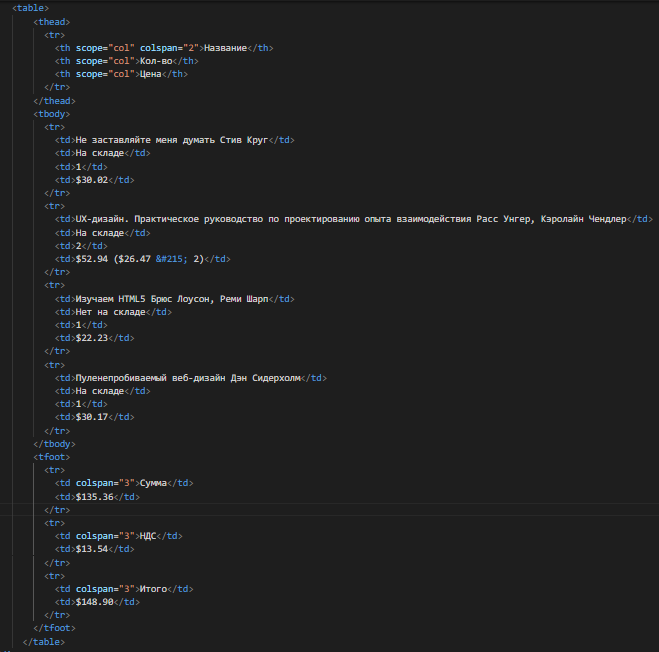 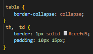
| Название | Кол-во | Цена | |
|---|---|---|---|
| Не заставляйте меня думать Стив Круг | На складе | 1 | $30.02 |
| UX-дизайн. Практическое руководство по проектированию опыта взаимодействия Расс Унгер, Кэролайн Чендлер | На складе | 2 | $52.94 ($26.47 × 2) |
| Изучаем HTML5 Брюс Лоусон, Реми Шарп | Нет на складе | 1 | $22.23 |
| Пуленепробиваемый веб-дизайн Дэн Сидерхолм | На складе | 1 | $30.17 |
| Сумма | $135.36 | ||
| НДС | $13.54 | ||
| Итого | $148.90 | ||
Границы в таблице - Свойство border-spacing
Когда свойство border-collapse со значением separate позволяет соединять одну границу с другой, так свойство border-spacing задаёт, какое расстояние, если оно есть, отображается между этими границами.
border-spacing
Задаёт расстояние между границами ячеек в таблице.
border-spacing не работает в случае, когда для таблицы установлено свойство border-collapse со значением collapse.
Значение по умолчанию: 0
Применяется: К таблицам
Синтаксис
border-spacing: <размер> [<размер>]
Значения
Одно значение устанавливает одновременно расстояние по вертикали и горизонтали между границами ячеек. Если значений два, то первое определяет горизонтальное расстояние, а второе — вертикальное.
Пример
Например, таблица с однопиксельной границей вокруг всей таблицы и однопиксельной границей вокруг каждой ячейки будет иметь двухпиксельную границу вокруг каждой ячейки, потому что границы складываются друг с другом.
Добавление border-spacing со значением 4px отделяет границы на 4 пикселя.
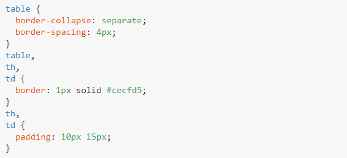
| Название | Кол-во | Цена | |
|---|---|---|---|
| Не заставляйте меня думать Стив Круг | На складе | 1 | $30.02 |
| UX-дизайн. Практическое руководство по проектированию опыта взаимодействия Расс Унгер, Кэролайн Чендлер | На складе | 2 | $52.94 ($26.47 × 2) |
| Изучаем HTML5 Брюс Лоусон, Реми Шарп | Нет на складе | 1 | $22.23 |
| Пуленепробиваемый веб-дизайн Дэн Сидерхолм | На складе | 1 | $30.17 |
| Сумма | $135.36 | ||
| НДС | $13.54 | ||
| Итого | $148.90 | ||
Свойство border-spacing работает только тогда, когда значение свойства border-collapse задано как separate, это значение по умолчанию. Если свойство border-collapse ранее не указывалось, мы можем использовать свойство border-spacing не волнуясь.
Добавление границ к строкам
Добавление границ к таблице временами может быть сложным, особенно при вставке границ между строк. В таблице границы не могут применяться к элементам <tr> или структурным элементам таблицы. Так что, когда мы желаем поставить границу между строк, потребуется некоторое размышление.
Начнём с того, что установим свойство border-collapse для таблицы как collapse, а затем добавим нижний border к каждой ячейке таблицы, независимо от того, какой это элемент, <th> или <td>.
По желанию мы можем убрать нижнюю границу у ячеек в последней строке таблицы с помощью псевдокласса :last-child, чтобы выбрать последний элемент <tr> в таблице и нацелиться на элементы <td> внутри строки.
Кроме того, если таблица использует структурные элементы, мы должны убедиться, что последняя строка таблицы находится в элементе <tfoot>.
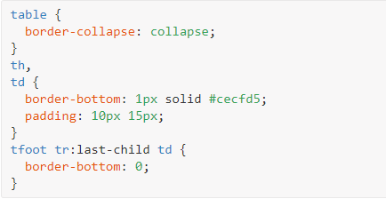
| Название | Кол-во | Цена | |
|---|---|---|---|
| Не заставляйте меня думать Стив Круг | На складе | 1 | $30.02 |
| UX-дизайн. Практическое руководство по проектированию опыта взаимодействия Расс Унгер, Кэролайн Чендлер | На складе | 2 | $52.94 ($26.47 × 2) |
| Изучаем HTML5 Брюс Лоусон, Реми Шарп | Нет на складе | 1 | $22.23 |
| Пуленепробиваемый веб-дизайн Дэн Сидерхолм | На складе | 1 | $30.17 |
| Сумма | $135.36 | ||
| НДС | $13.54 | ||
| Итого | $148.90 | ||
Чередование в таблице
Среди усилий сделать таблицы более наглядными, одной типовой практикой дизайна является «чередование» строк таблицы с переменным цветом фона. Это делает строки чётче и обеспечивает наглядность при сканировании информации.
Один из способов сделать это — поместить класс к каждому элементу <tr> через один и установить цвет фона для этого класса.
Другой, более простой способ заключается в использовании псевдокласса :nth-child с параметром even или odd, чтобы выбрать каждый элемент <tr> через один.
Здесь наша таблица с книгами использует псевдокласс :nth-child с параметром even для выбора всех чётных строк таблицы и применения к ним серого фона. Следовательно, каждая строка через одну в теле таблицы будет серой.
| Название | Кол-во | Цена | |
|---|---|---|---|
| Не заставляйте меня думать Стив Круг | На складе | 1 | $30.02 |
| UX-дизайн. Практическое руководство по проектированию опыта взаимодействия Расс Унгер, Кэролайн Чендлер | На складе | 2 | $52.94 ($26.47 × 2) |
| Изучаем HTML5 Брюс Лоусон, Реми Шарп | Нет на складе | 1 | $22.23 |
| Пуленепробиваемый веб-дизайн Дэн Сидерхолм | На складе | 1 | $30.17 |
| Сумма | $135.36 | ||
| НДС | $13.54 | ||
| Итого | $148.90 | ||
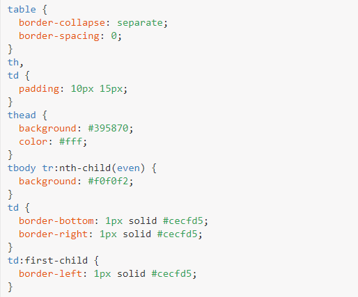
В этом коде есть несколько нюансов, о которых стоит упомянуть.
Для начала, элемент <table> явно содержит свойство border-collapse со значением separate, а border-spacing задано как 0. Причина в том, что элементы <td> включают в себя границы, в то время как элементы <th> нет. Без свойства border-collapse, как separate границы у элементов <td> сделают тело и подвал таблицы шире, чем шапка.
Поскольку свойство border-collapse задано как separate, мы должны быть осторожны в том, как границы применяются к элементам <td>.
Здесь границы устанавливаются справа и снизу у всех элементов <td>. Затем первый элемент <td> в <tr> получает левую границу.
Так как все элементы <td> соединяются вместе с их границами, это обеспечивает появление сплошной границы вокруг каждого элемента.
Наконец, все элементы <th> получают синий фон, а каждый чётный элемент <tr> получает серый background через псевдокласс :nth-child.
Выравнивание текста
В дополнение к границам и чередованию, важную роль в формировании таблицы играет выравнивание текста внутри ячеек.
Имена, описания и тому подобное, как правило, выравниваются по левому краю, в то время как номера и другие числа выравниваются по правому.
Другая информация, в зависимости от контекста, может быть по центру. Мы можем переместить текст по горизонтали с помощью свойства text- align в CSS
Для выравнивания текста по вертикали, однако, применяется свойство vertical-align. Это свойство работает только со строчными элементами и ячейками таблицы и не будет работать для блочных, строчно-блочных или ещё каких-либо других элементов.
Свойство vertical-align принимает несколько разных значений, самые популярные — top, middle и bottom. Эти значения вертикально позиционируют текст относительно ячейки таблицы или ближайшего родительского элемента для строчных элементов.
Исправив HTML и CSS и включив свойства text-align и vertical-align, мы можем очистить макет нашей таблицы с книгами. Обратите внимание, что данные в таблице становится намного яснее и удобнее.
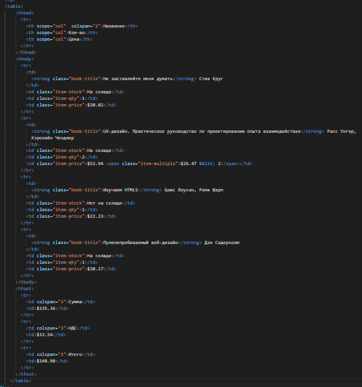 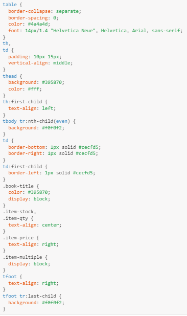
| Название | Кол-во | Цена | |
|---|---|---|---|
| Не заставляйте меня думать Стив Круг | На складе | 1 | $30.02 |
| UX-дизайн. Практическое руководство по проектированию опыта взаимодействия Расс Унгер, Кэролайн Чендлер | На складе | 2 | $52.94 $26.47 × 2 |
| Изучаем HTML5 Брюс Лоусон, Реми Шарп | Нет на складе | 1 | $22.23 |
| Пуленепробиваемый веб-дизайн Дэн Сидерхолм | На складе | 1 | $30.17 |
| Сумма | $135.36 | ||
| НДС | $13.54 | ||
| Итого | $148.90 | ||
Полностью стилизованная таблица
Пока наша таблица с книгами выглядит довольно хорошо. Давайте сделаем ещё один шаг вперёд, скруглим некоторые уголки и чуть больше стилизуем часть текста.
| Название | Кол-во | Цена | |
|---|---|---|---|
| Не заставляйте меня думать Стив Круг | На складе | 1 | $30.02 |
| UX-дизайн. Практическое руководство по проектированию опыта взаимодействия Расс Унгер, Кэролайн Чендлер | На складе | 2 | $52.94 $26.47 × 2 |
| Изучаем HTML5 Брюс Лоусон, Реми Шарп | Нет на складе | 1 | $22.23 |
| Пуленепробиваемый веб-дизайн Дэн Сидерхолм | На складе | 1 | $30.17 |
| Сумма | $135.36 | ||
| НДС | $13.54 | ||
| Итого | $148.90 | ||